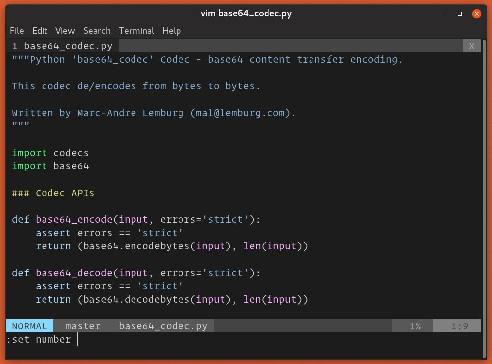
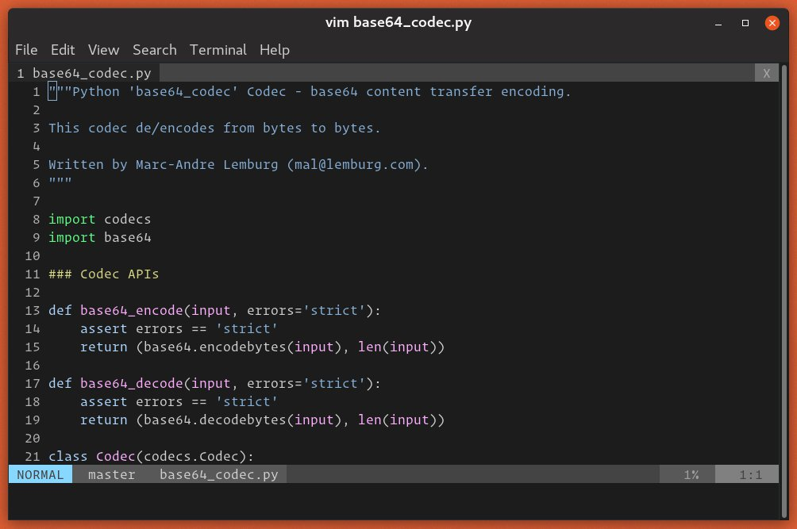
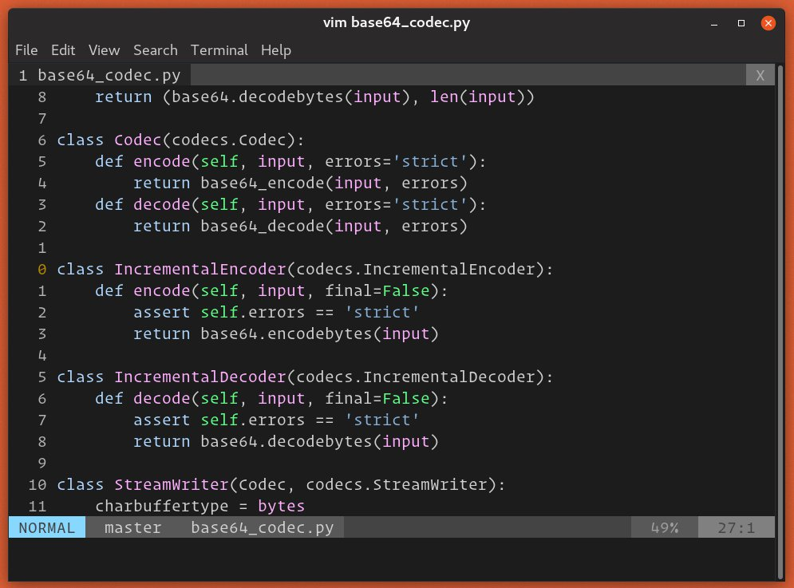
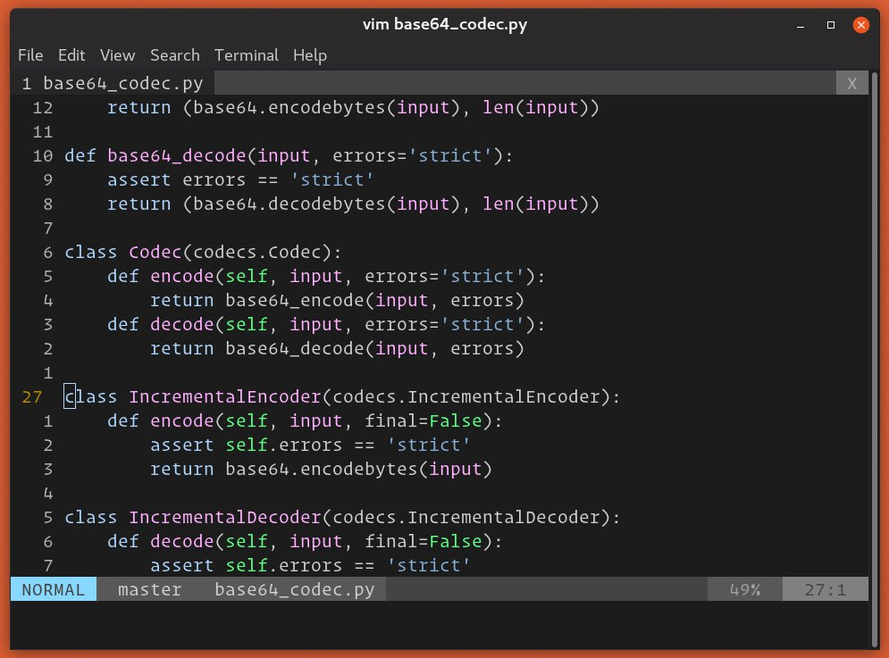

如何在 Vim/Vi 中显示行号
Vim/Vi 是许多软件开发人员和 Linux 系统管理员选择的文本编辑器。
默认情况下， Vim 不显示行号，但可以轻松打开它们。 Vim 支持三种行编号模式，可帮助您浏览文件。除了标准的绝对行编号之外， Vim 还支持相对行和混合行编号模式。
在本指南中，我们将向您展示如何在 Vim/Vi 文本编辑器中显示或隐藏行号。
除了帮助导航代码外，行编号在其他情况下(例如结对编程，调试脚本，代码检查，引用特定行等)也很有用。
绝对行号
绝对行号是标准行号，它在每行文本旁边显示适当的行号。
要激活行编号，请设置数字标志：
-
按
Esc键切换到命令模式。 -
按
:( 冒号)，光标将移动到屏幕的左下角。输入set number或set nu并点击Enter。:set number
-
行号将显示在屏幕的左侧：

要禁用绝对行号，请运行 :set nonumberor set nonu 命令：
:set nonumber
您也可以使用 :set number! 或 :set nu! 切换：
:set number!
相对行号
如果启用相对行号，当前行的行号被示出为 0 ，和从当前行上面和下面的行增量编号 (1 ， 2 ， 3… 等等)。
相对行模式非常方便，因为 Vim 中的许多操作(例如上移/下移和删除行)都在相对行号上进行。
例如，要删除光标下方的后十行，可以使用 d10j 命令。启用相对行号后，您将对代码有更直观的了解。
要启用相对行编号，请切换到命令模式，然后输入 :set relativenumber 或 :set rnu ：
:set relativenumber

要禁用相对行号，请输入 :set norelativenumber 或 set nornu ：
:set nonumber
要切换相对行号，请使用 :set relativenumber! 或 :set rnu! 命令：
:set number!
混合行号
在 Vim 7.4 和更高版本中，同时启用绝对和相对行号将设置混合行号模式。
混合行编号与相对行编号相同，唯一的区别是当前行(未显示) 0 显示了其绝对行号。
要打开混合线路编号，请同时运行 number 和 relativenumber 命令：
:set number relativenumber

可以通过逐个运行命令来实现相同的目的：
:set number
:set relativenumber
要禁用混合模式，您需要同时关闭绝对编号和相对编号。
永久设定
如果希望每次启动 Vim 时都显示行号，请将适当的命令添加到您的 Vim 配置文件 .vimrc 中。例如，要启用绝对行编号，应添加以下内容：
vim ~/.vimrc
:set number
结论
要在 Vim 中显示行号，请使用 :set number 命令显示绝对行号，使用 :set relativenumber 显示相对行号。如果同时启用了绝对行号和相对行号，则 Vim 会切换到混合行号模式。